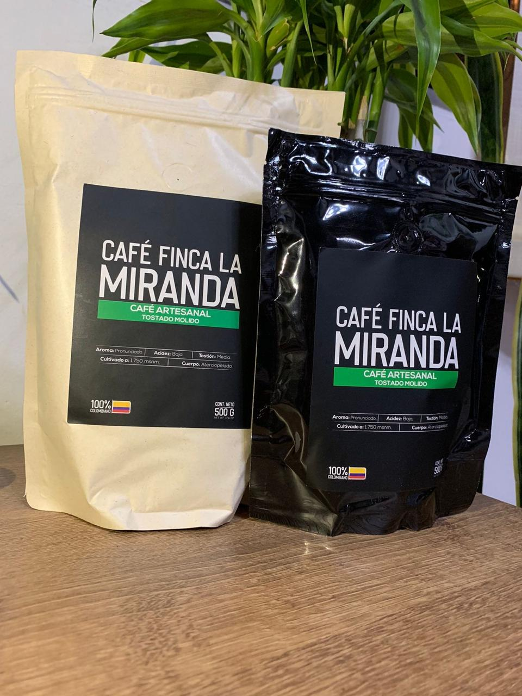
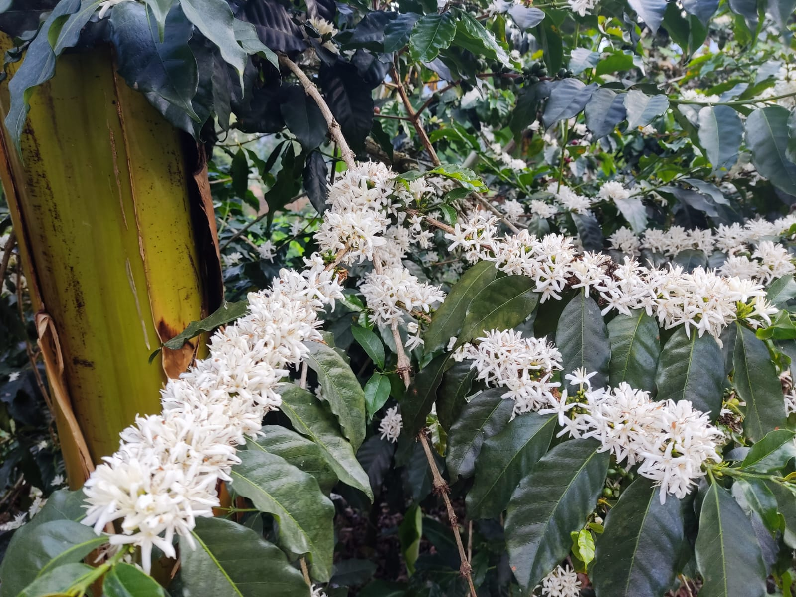
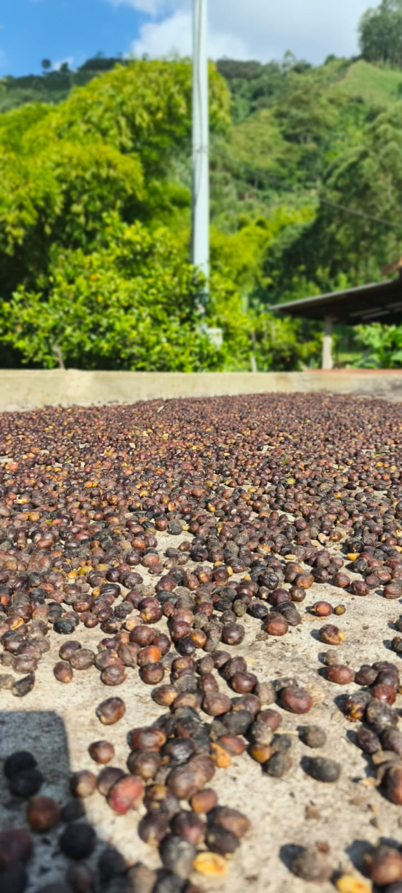
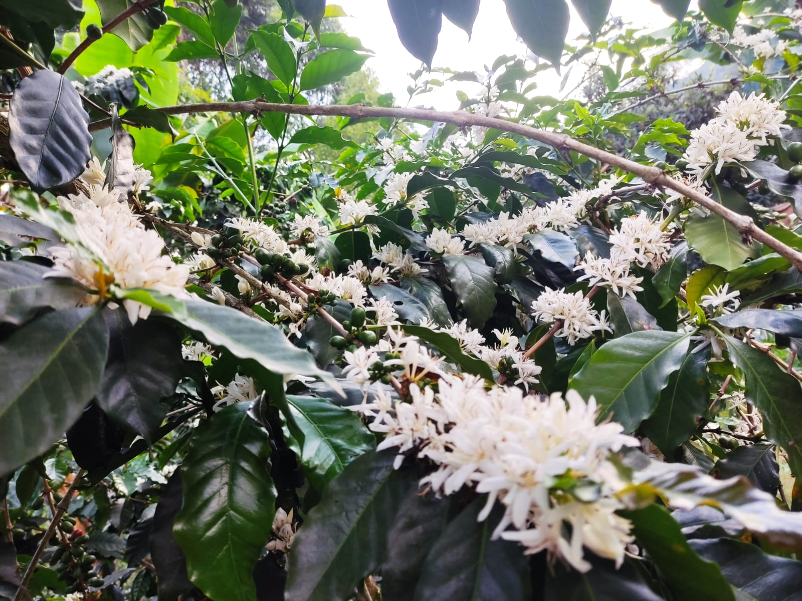
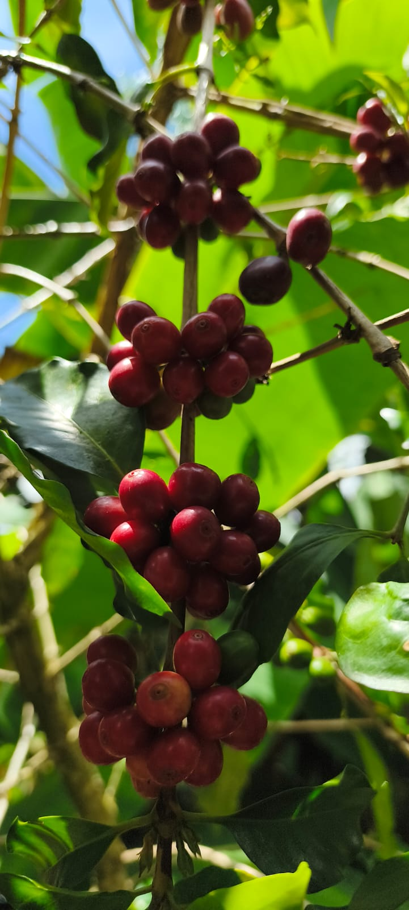
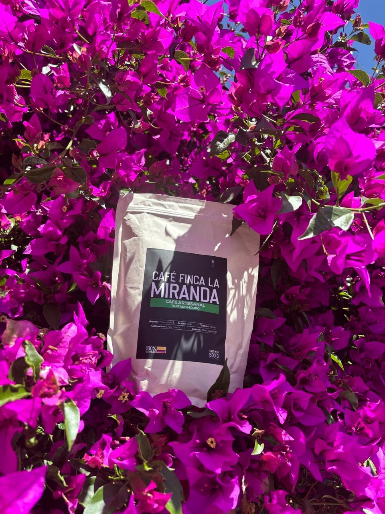
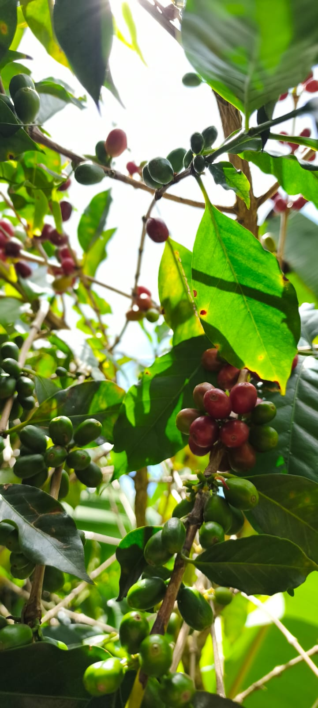
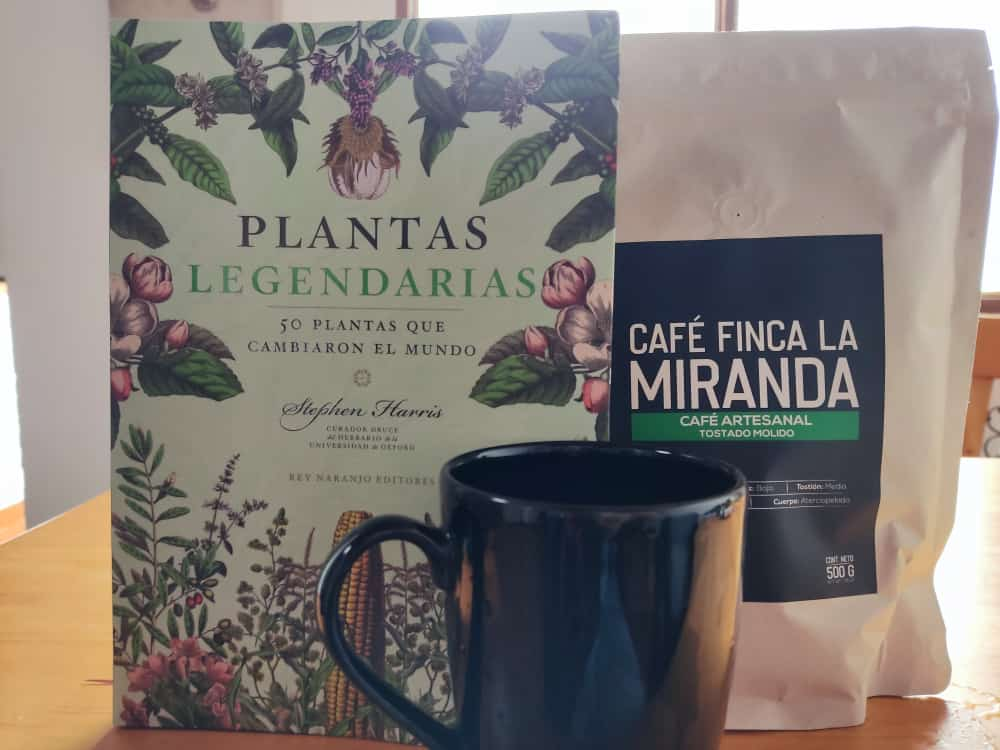
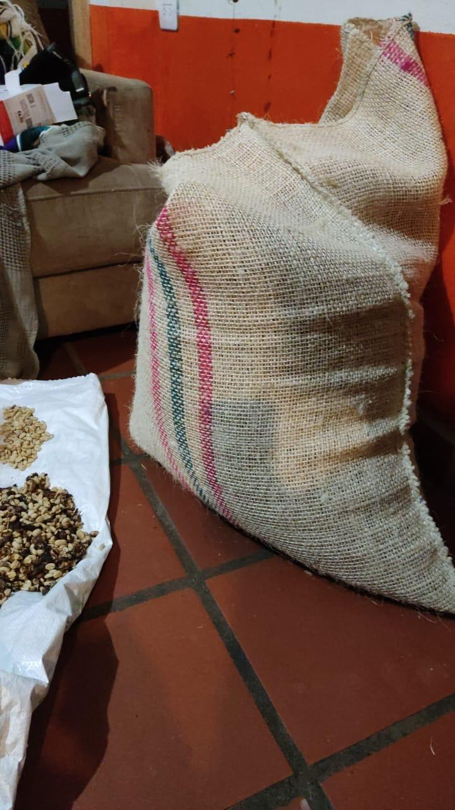
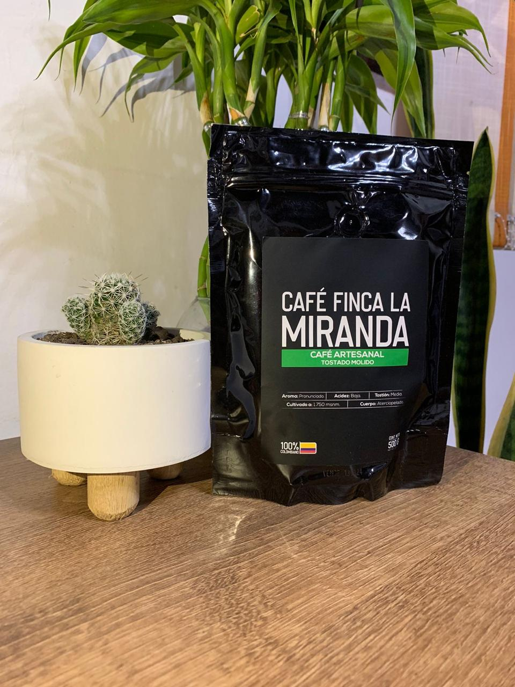

Tostado Molido
250 g
$28.000

100% colombiano · Suroeste antioqueño
Cultivado a 1.750 msnm en la vereda Verdún, Jardín – Antioquia. Cada grano lleva el cuidado de las familias que lo siembran, lo cosechan y lo tuestan a mano.

Nuestra finca
Todos los días, desde la primera luz de la mañana, recorremos los cultivos, abonamos, desherbamos y cuidamos con cariño este valioso café. El proceso es realizado 100% por manos campesinas de la región del suroeste antioqueño, quienes, motivadas por el café de la mañana, se recargan de energía para seguir sembrando amor.
Hoy, gracias a las familias que laboran en la Finca La Miranda, puedes complacerte con un delicioso café y gozar de momentos mágicos: para alejar el sueño después del almuerzo, para acompañar una visita, para disfrutar del frío de una tarde, o por el simple placer que transporta cada uno de nuestros granos.
Recuerda que en cada taza está el amor de nuestros cultivadores y el rocío de las nubes que regaron el campo.
📍 Fabricado y empacado por Finca La Miranda — Vereda Verdún, Jardín, Antioquia.
De la finca a tu taza






Café artesanal tostado
Disponible en grano o molido, en tres presentaciones. Escríbenos por WhatsApp para hacer tu pedido.

$28.000

$28.000
$45.000
$45.000
$170.000
$170.000
Saca lo mejor de cada grano
Consérvese en un lugar fresco, seco y limpio.
Escríbenos por WhatsApp y te ayudamos a elegir tu presentación.